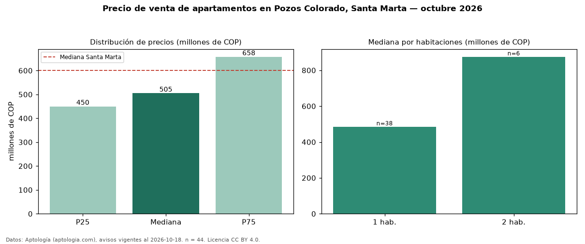

Precio de venta de apartamentos en Pozos Colorado, Santa Marta — octubre 2026
En Pozos Colorado, Santa Marta, la mediana de precio de venta de apartamentos es COP 505 millones, según 44 avisos vigentes. Frente a la mediana de Santa Marta para apartamentos (COP 600 millones), queda 16 % por debajo. Por metro cuadrado, la mediana es COP 12,35 millones/m² (n = 39 avisos con área), 42 % por encima de Santa Marta (COP 8,72 millones/m²). El área mediana anunciada es 38 m². El segmento con más oferta es el de 1 habitación (38 avisos, mediana COP 485 millones); pasar de 1 habitación a 2 habitaciones cambia la mediana +80 %. La administración mediana declarada es COP 534.472 al mes (n = 24). Por precio mediano es el puesto 12 de 18 barrios de Santa Marta con al menos 30 avisos de apartamentos en venta (COP): en la franja media. El estrato más frecuente es 6 (84 % de los avisos con estrato). Datos: Aptología (aptologia.com), CC BY 4.0 — https://www.aptologia.com/venta/santa-marta/pozos-colorado. Archivos: PDF, CSV con las cifras y gráfica PNG.

| Avisos únicos | 44 |
|---|---|
| Percentil 25 | COP 450.000.000 |
| Mediana | COP 505.000.000 |
| Percentil 75 | COP 657.500.000 |
| Mediana por m² | COP 12.349.490 |
Fuente: avisos vigentes de portales inmobiliarios recopilados por Aptología, deduplicados (mínimo 30 avisos únicos por celda). Precios pedidos, no cerrados. Fecha: 2026-10-18.